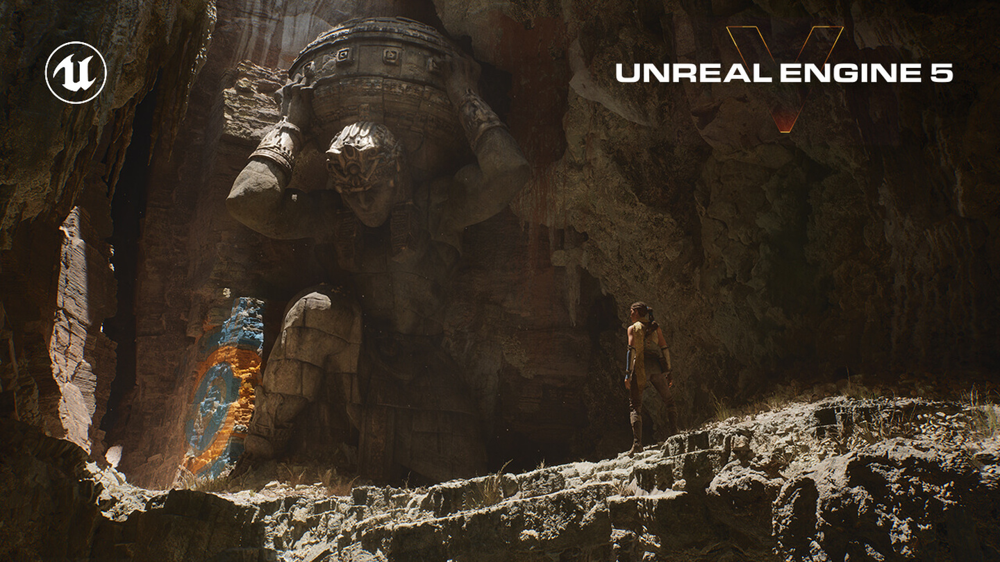

前沿技术产品
一.虚幻引擎
1.虚幻引擎是什么
虚幻引擎就是一款游戏引擎。游戏引擎是指一些已经编写好的可编辑电脑游戏系统或者一些交互式实时图像应用程序的核心组件。这些系统为游戏设计者提供各种编写游戏所需的各种工具，其目的在于让游戏设计者能容易和快速地做出游戏程式而不用由零开始。简单来说，就是游戏引擎是开发者写的一堆代码框架，而游戏开发者就用这堆代码框架，来快速实现游戏开发。游戏可以分为游戏引擎和游戏资源两大部分，游戏=引擎（程序代码）+资源（图象，声音，动画等）。游戏引擎的作用就是按游戏设计的要求顺序地调用这些资源。它就像一个发动机，控制着游戏的运行。
2.虚幻5引擎有多牛？
由于画面效果实在是太逼真，有网友开玩笑说，感觉早晚虚幻（Unreal）引擎都要改名叫“真实（Real）引擎”。
根据Epic的介绍，虚幻引擎5主要引入了两大新技术。一个是渲染技术Nanite，能够直接在游戏里表现出影视级别的超高精度模型。在演示中有一个古代雕塑的镜头，使用的模型超过3300万多边形，不管走多近，都能欣赏到丰富的细节。在后面一个场景里，同样的模型被复制摆放了几十份，整个场景号称“有160亿多边形”。另一个是动态全局光照技术Lumen，在演示进行过程中，改变了太阳照射的方向，山洞里的反光就即时跟着发生了变换。没有使用光线追踪，却实现了类似光线追踪的效果。

这里我们来简单介绍一下虚幻引擎5的两大技术：
Nanite虚拟微多边形几何体可以让美术师们创建出人眼所能看到的一切几何体细节。Nanite虚拟几何体的出现意味着由数以亿计的多边形组成的影视级美术作品可以被直接导入虚幻引擎——无论是来自Zbrush的雕塑还是用摄影测量法扫描的CAD数据。Nanite几何体可以被实时流送和缩放，因此无需再考虑多边形数量预算、多边形内存预算或绘制次数预算了；也不用再将细节烘焙到法线贴图或手动编辑LOD，画面质量不会再有丝毫损失。
Lumen是一套全动态全局光照解决方案，能够对场景和光照变化做出实时反应，且无需专门的光线追踪硬件。该系统能在宏大而精细的场景中渲染间接镜面反射和可以无限反弹的漫反射；小到毫米级、大到千米级，Lumen都能游刃有余。美术师和设计师们可以使用Lumen创建出更动态的场景，例如改变白天的日照角度，打开手电或在天花板上开个洞，系统会根据情况调整间接光照。Lumen的出现将为美术师省下大量的时间，大家无需因为在虚幻编辑器中移动了光源再等待光照贴图烘焙完成，也无需再编辑光照贴图UV。同时光照效果将和在主机上运行游戏时保持完全一致。
这一品质上的飞跃得益于无数团队的努力和技术的进步。为了使用Nanite几何体技术创建巨型场景，团队大量使用了Quixel的MegaScans素材库，后者提供了具有成百上千万多边形的影视级对象。为了支持比前世代更庞大更精细的场景，PlayStation 5也大幅提升了存储带宽。
可以说，虚幻引擎的产生极大的提升了玩家的游戏体验。